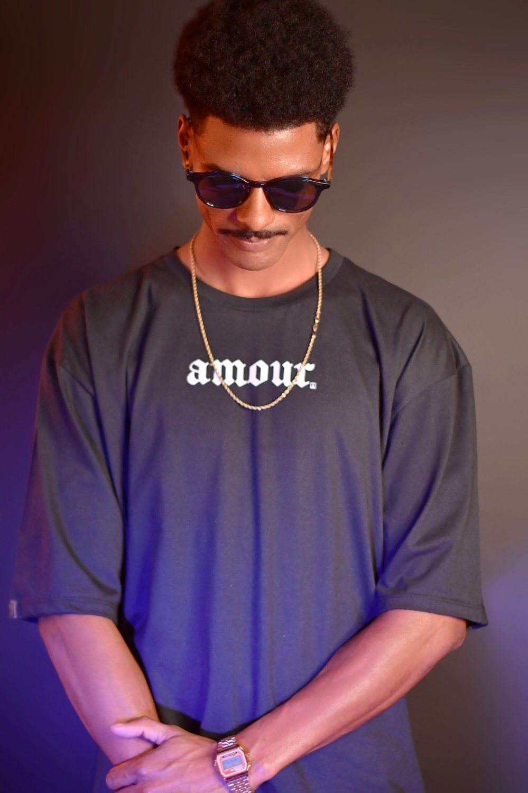

Psytrance · São Paulo, Brasil
para quem dança de olhos fechados.
FULL ON NIGHT

01 — Release
Do pulso
à transcendência.
Nascido e criado na capital paulista, Caique Souza encontrou o psytrance em 2016, na pista de um festival. Os ritmos pulsantes, as melodias hipnóticas e a atmosfera psicodélica que tomava conta do ambiente mudaram sua relação com a música — e ali nasceu um propósito.
Mergulhou de cabeça nesse universo e deu forma ao Astralix, seu projeto de Full On Night. A escolha foi natural: a vertente noturna, densa e enérgica do Full On permite construir uma atmosfera intensa na pista e conduzir o público por uma verdadeira jornada psicodélica.
Inquieto e em constante evolução, aperfeiçoou a técnica estudando mixagem no Studio Leo Casagrande, onde aprofundou a arte de mixar e de construir sets envolventes — com narrativa, tensão e catarse.
Em cada apresentação, Astralix busca uma conexão profunda com a pista: transportar quem está ali para um estado transcendental e despertar emoções intensas. Seu propósito é seguir compartilhando a paixão pelo psytrance e espalhando a energia única do estilo em festivais e eventos pelo Brasil e pelo mundo.
- 2016
- primeiro encontro com o psytrance
- Full On Night
- vertente & identidade
- São Paulo
- base · capital paulista
- Leo Casagrande
- formação em mixagem
02 — Na pista
Veja ao vivo.
Registros recentes do Astralix nas pick-ups — de noite e de dia, na luz negra ou no sol, sempre com a pista no centro.
03 — O set
Uma jornada em três fases.
-
I
Ignição
Groove marcado e baixo rolante prendem a pista desde o primeiro minuto.
-
II
Imersão
Camadas psicodélicas, texturas sombrias e tensão crescente: a noite se aprofunda.
-
III
Transcendência
O pico. Catarse coletiva — o momento em que o público deixa de assistir e passa a viajar.
04 — Galeria
Luz, fumaça & pista.


05 — Booking & collabs
Leve o Astralix para a sua pista.
Booking exclusivo via
Echoes of Gaia
Festivais, open airs, club nights e afters. Fale com a agência para datas, cachê e rider técnico.
Collabs
Produtores, DJs, labels e coletivos: B2Bs, showcases e projetos em conjunto são bem-vindos. Chame no direct.
06 — Press kit